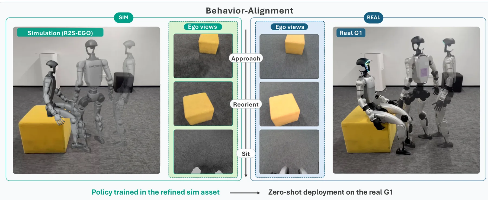
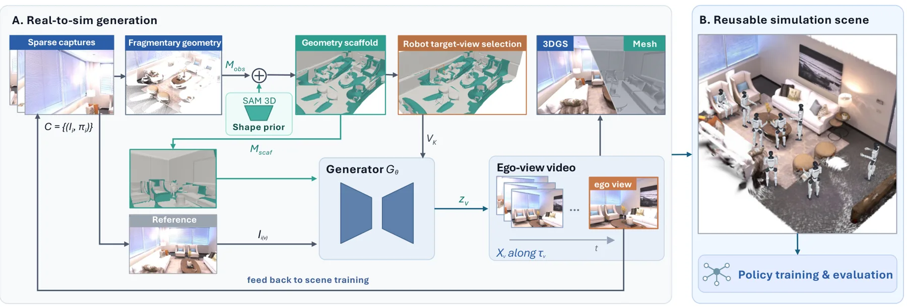
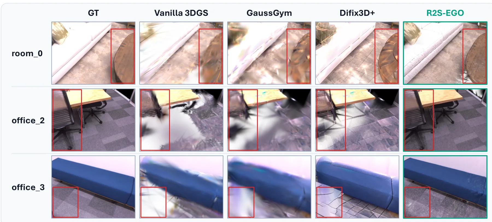
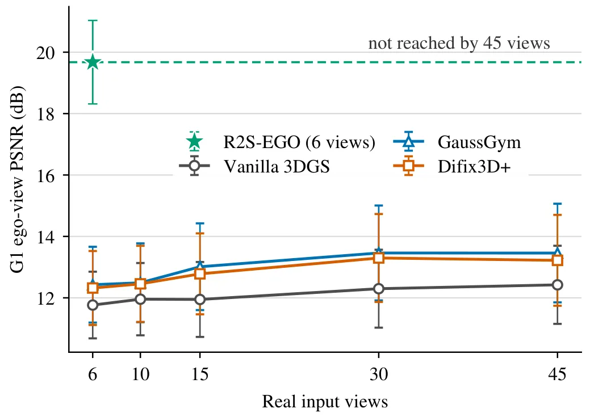
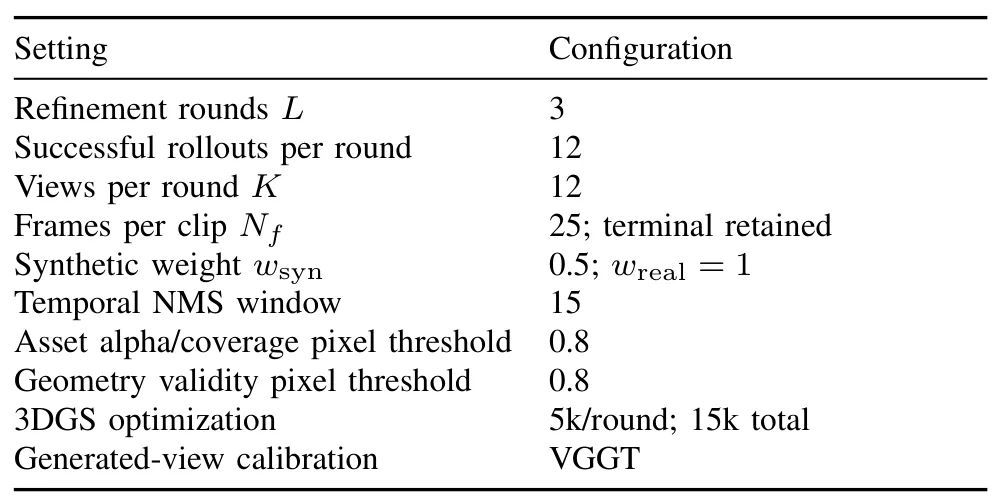
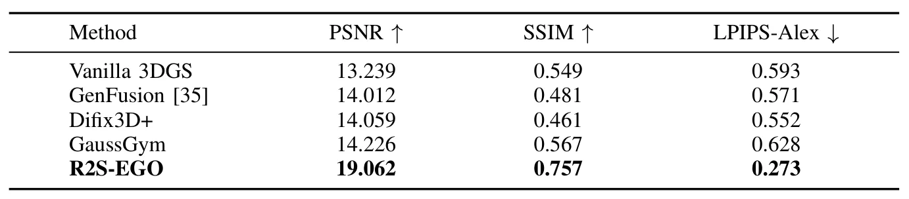
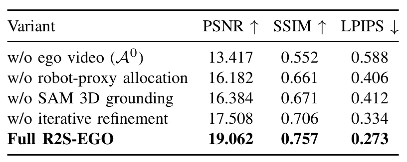

R2S-EGO：稀疏采集 Real-to-Sim 的双代理精化R2S-EGO: Dual-Proxy Refinement for Sparse-Capture Real-to-Sim
把稀疏三维场景表示直接连接到真实机器人策略迁移，效果提升明显；场景与行为规模较小，伪观测几何幻觉和闭环误差需要验证。
一句话工作总结
以机器人可执行域和真实采集几何为双重约束，用可控合成视图补足稀疏采集并联合更新视觉资产与碰撞面。
摘要
R2S-EGO 面向机器人 ego trajectory 下的稀疏 real-to-sim 场景构建。方法以 simulator-derived robot proxy 表示行为可执行的查询域，以 capture-anchored geometry proxy 提供场景结构条件；在固定预算内选择支持不足但具有几何条件的视角，生成伪观测并迭代精化视觉资产，同时刷新碰撞表面而保持机器人动力学和控制栈不变。在 Replica 三场景的 48 个冻结 Unitree G1 视角上，六视图配置达到 19.062 dB PSNR；五组种子下真实机器人坐下成功率为 82.5% ± 6.8%。
Real-to-sim (R2S) depends on scene representations that render observations along robot ego trajectories, yet dense multi-view capture limits per-environment real-image capture-count efficiency, and sparse human capture can leave behavior-scoped robot views under-supported. Camera-controlled synthesis can fill missing views, but its use in R2S requires behavior-admissible queries and capture-anchored structural conditioning. We present R2S-EGO, which couples a simulator-derived robot proxy that represents the behavior-scoped executable query domain with a capture-anchored geometry proxy that supplies scene-specific structural conditions. Within this domain, fixed- budget selection targets current support deficits for which geometry support is available. The generated observations are assimilated as pseudo-observations to refine the visual asset, while real captures remain anchors. The fused geometry proxy also supplies the scene collision surface, which is refreshed between rounds. Together, these updates refine the existing simulation scene while its robot dynamics and control stack stay fixed. Across 48 frozen Unitree G1 ego views in three Replica scenes, six-view R2S-EGO reaches 19.062 dB PSNR, compared with 14.226 dB for the strongest reported R2S baseline. Across five paired policy-training seeds, R2S-EGO achieves 82.5% +/- 6.8% real-G1 sitting success, compared with 10.0% +/- 10.5% for GaussGym.
中文解读摘录
- 价值：用 simulator-derived robot proxy 约束机器人可执行查询域，再以 capture-anchored geometry proxy 提供场景结构条件、碰撞表面和伪观测生成锚点。
- 结果：在 Replica 三场景的 48 个冻结 Unitree G1 ego views 上，六视图配置达到 19.062 dB PSNR，对比最强报告基线 14.226 dB；五组策略训练种子下，真实 G1 坐下成功率为 82.5% ± 6.8%。
- 关注点：少量真实采集与可控合成视图联合更新很有实用价值，但需检查 pseudo-observation 的几何幻觉、碰撞面误差累积，以及仅三场景和单一行为对泛化结论的限制。
- 链接：arXiv · PDF
图表/页面预览
{kind=link}

{kind=link}

{kind=link}

{kind=link}

{kind=link}

{kind=link}

{kind=link}
